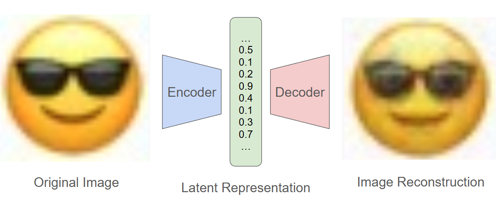
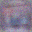
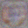
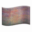
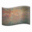
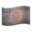
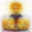
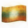
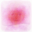

building a simple autoencoder from scratch in C


by Ryan Alport
1. teach a computer to compress an image into a "meaningful" numerical representation
2. explore the geometry of the space learned by our model
3. generate new, never before see emojis with some cool javascript tools
4. consider how big time image generation builds off of these ideas
we know that any given RGB image can be represented as:
width * height * 3 floating point numbers
width * height * 3 floating point numbers
but those raw pixel values dont really tell us anything...
so how does a model learn to extract colors, shapes, or general structures from images?
the place to start is to train a model to see an image, compress it into a single vector, then decompress that vector into the same image
we can evaluate how good the model is by comparing the before and after images, pixel by pixel (MSE to be precise)

(real reconstructed image by our model)
we compute how much each weight contributed to the error, this is the gradient.
then we move each weight in the opposite direction of the error:
weight = weight − learning_rate × gradient
this process is called backpropagation, errors flows backward through the network, slowly aproaching "correct" values
while image reconstruction is cool, it doesnt seem immediately useful, and for us its not...
what we are really concerned about is the compressed vector the model creates, we call it the latent
the reason it is so useful is because in well trained models, actual features are encoded into this vector
similar images have similar latent vectors, evidencing that we have created an "image space" which we may now explore...

(visualization by Zhang (2017) - Deep Unsupervised Clustering Using Mixture of Autoencoders)
we can now create entirely new vectors, either at specific points or random ones, and decode them to see where they take us
random latent
completely random latent vectors dont usually make sense




latent sample
we can sample from the distribution of latent values to get slightly better




known latent + noise
even easier we can just decode known images and add random noise to the latent



interpolation
we can also add, subtract, or smoothly move between two or more images


PCA manipulation
I have used an algorithm to extract the latent dimensions with the highest deviations, these may be considered the principal axes
this javascript tool allows you to edit those and see the decoded values live